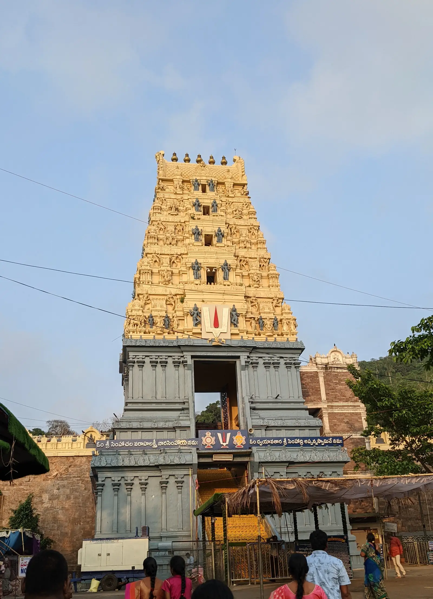

Day 1 · Stop 01 · Hilltop temple ★ Main stop
🕒 Day 1 · 6:00 – 10:30 AM
Simhachalam Temple
Sri Varaha Lakshmi Narasimha Swamy Temple
A 13th-century hilltop temple to Varaha Narasimha, 300 m up the Simhachalam hills.
- 300 m up the Simhachalam hills
- Built in the 13th century
- Kalinga-style architecture

About Simhachalam Temple
Sri Varaha Lakshmi Narasimha Swamy Temple stands on the Simhachalam Hill Range, about 300 metres above sea level on the edge of Visakhapatnam. It is dedicated to Lord Vishnu in his Varaha Narasimha form; legend says he appeared here as the lion-headed protector of his devotee Prahlada.
The present temple was built in the 13th century by the Eastern Ganga king Narasingha Deva I and consecrated in 1268 AD. It is built in the Kalinga style, and its carved halls and towering gopurams are the highlight of the climb.
For most of the year the idol is covered in sandalwood paste, which makes it resemble a linga. Only on Akshaya Tritiya is the paste removed for the deity's true-form darshan, and the whole hill fills with pilgrims.
What we'll see
- The carved Kalinga-style shrine and its golden gopurams
- Climbing the thousand-step path from the foot of the hill
- Sweeping views over the green Simhachalam hills
- The temple lit up after dark
Photo gallery


Crew plan · Day 1 · Stop 1 of 8
6:00 – 10:30 AM
The trip begins here: early-morning darshan, then the photography team catches the gopuram in golden light.
Open in Google MapsTips
- Go early in the morning to beat the queues and the heat.
- Dress modestly; footwear stays outside the shrine.
- Check darshan timings before you go; queues swell on weekends and festival days.